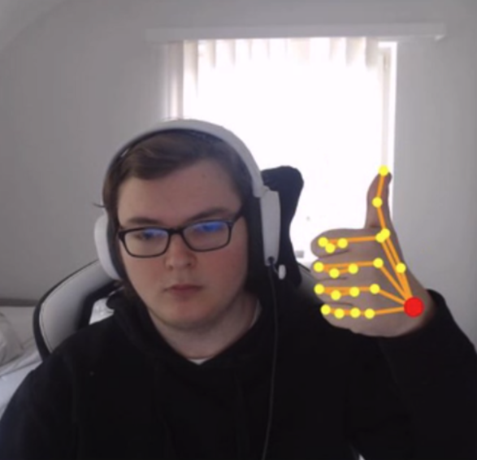

Using AI to guess gestures
Project: Hand Detection (or Project HandTrack) is the main project i worked on during my internship at II.O. It uses AI frameworks like TensorFlow.js and handpose to draw a mesh on the users video via webcam, and takes the data of said mesh to see which gesture the user's hand is making.
Used technologies: React, TensorFlowJS, handtrackjs, fingerpose